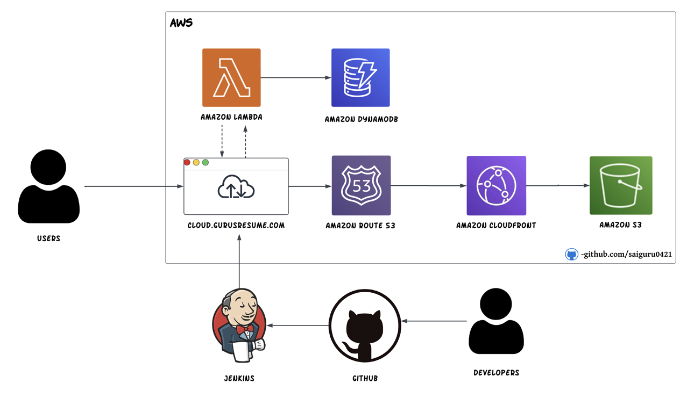

About me:
"DevOps Engineer | Streamlining Software Delivery & Infrastructure Automation | Continuous Integration/Deployment | Cloud Engineer | Agile Enthusiast"
Contact info:
@LinkedIn and guruss030601@gmail.com.
"DevOps Engineer | Streamlining Software Delivery & Infrastructure Automation | Continuous Integration/Deployment | Cloud Engineer | Agile Enthusiast"
GPA: 3.64.
GPA: 3.68.
This project project involves automating the deployment and management of a website on Amazon Web Services (AWS) using Terraform. This action-packed initiative integrates a Jenkins Continuous Integration/Continuous Deployment (CI/CD) pipeline to streamline the development lifecycle.
 In this dynamic project, Terraform acts as the driving force, orchestrating the provisioning of AWS resources essential for hosting the website. This includes setting up scalable and resilient infrastructure components such as AWS S3, Route 53, AWS CloudFront, and DynamoDB. The emphasis is on automating these tasks to enhance efficiency and consistency.
Simultaneously, a robust Jenkins CI/CD pipeline is established to enable seamless and rapid deployment of code changes. Jenkins takes charge of automating the build, test, and deployment phases, ensuring a smooth workflow for developers. With the power of automation, developers can focus on coding while the pipeline takes care of the rest.
The synergy between Terraform and Jenkins empowers the project with scalability, reliability, and agility. It not only accelerates the development process but also ensures a dependable and automated deployment pipeline, paving the way for a highly efficient and responsive web hosting solution on AWS.
Git Link: Github/saiguru0421/AWS-resume-site/
The SharePoint Data Migration project is a strategic initiative aimed at seamlessly transferring our existing data to an upgraded SharePoint environment. In this endeavor, I took charge of the project planning process, meticulously detailing every step, task, and milestone to ensure a structured and efficient workflow.
To guarantee the project's success, I initiated a thorough budgeting process, considering all essential resources, tools, and personnel needed for the migration. This comprehensive budget is designed to provide the necessary financial support, minimizing potential obstacles and ensuring the project stays on track.
Our team will implement state-of-the-art techniques and methodologies to execute the data migration with precision and speed. This includes data analysis, mapping, and validation processes to safeguard data integrity throughout the transfer. By proactively planning and budgeting, we are poised for a successful migration, delivering an upgraded SharePoint environment that meets and exceeds expectations.
Site Link: On Progress
Cloned the basic features of the Instagram application.
Designed and implemented a relational database schema using MySQL to store user data, photos, comments, likes, and followers/following relationships.